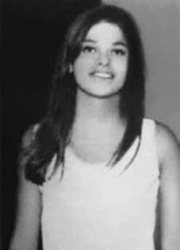

Maria
Augusta
Thomaz
CIRCUNSTÂNCIAS DA MORTE
O Molipo foi alvo de intensa vigilância pelas forças de segurança desde a época em que seus militantes treinavam em Cuba. O regresso ao Brasil representava verdadeira sentença de morte aos integrantes do grupo, como ocorreu com Maria Augusta Thomaz e Márcio Beck Machado. Documento de 1972 localizado pela Comissão Nacional da Verdade (CNV), cujo assunto é “Organização e atividades do “MOLIPO” – Movimento de Libertação Popular”, trata da origem, estrutura, ações realizadas e integrantes do Molipo. i Nele é possível confirmar o monitoramento da organização e de seus integrantes: (i) os que regressaram, vindos de Cuba e com curso de guerrilha: Aylton Adalberto Mortati; Antônio Benetazzo; Arno Preiss; Boanerges de Souza Massa; Flávio de Carvalho Molina; Francisco José de Oliveira; João Carlos Cavalcanti Reis; José Dirceu de Oliveira e Silva; José Roberto Arantes de Almeida; Lauriberto José Reis; Márcio Beck Machado; Maria Augusta Thomaz; Natanel de Moura Giraldi; Ruy Carlos Vieira Berbert (ii) os sem curso de guerrilha: Sérgio Capozzi; Jane Vanini Capozzi; Otávio Ângelo; Carlos Eduardo Pires Fleury; Jeová Assis Gomes (iii) e aqueles que ainda estavam em Cuba, prestes a retornar e todos com curso de guerrilhas: Ana de Cerqueira César Corbisier Mateus; Ana Maria Soares Palmeira; Gastone Lúcia de Carvalho Beltrão; Itobi Alves Correa Júnior; João Leonardo da Silva Rocha; José Zeferino da Silva; José Ferreira da Silva. O documento destaca também que: Além das baixas empreendidas pelo DOI, graças às prisões e a farta documentação apreendida, somando-se as investigações e buscas, conseguiu-se o completo levantamento do MOLIPO, bem com a identificação de todos os seus militantes, a execução de quatro ainda não “levantados”. Com as baixas sofridas, ficou em situação difícil, já que seu comando está totalmente desarticulado. Outro documento localizado pela CNV, de 1973, “Atividades subversivas – MOLIPO – localização de subversivos nos municípios goianos de Jataí e Rio Verde”, confirma a morte do casal pela Ditadura Militar, a despeito de apresentar a versão oficial de morte em tiroteio. ii O documento confirma também a participação de agentes de segurança de São Paulo na operação: No dia 16 mai 73, agentes de segurança de São Paulo e Brasília travaram tiroteio com os terroristas Márcio Beck Machado, codinome “Luiz” ou “Raimundo” e Maria Augusta Tomaz (sic), codinome “Márcia” ou “Neusa”, na fazenda Rio Doce, município de Rio Verde (GO), quando foram mortos os aludidos subversivos. Em depoimento à CNV, o caseiro da fazenda Rio Doce, Eurípedes João da Silva, obrigado por agentes fortemente armados a sepultar clandestinamente o casal, contou ter sido acordado com os gritos na madrugada de 17 de maio de 1973: “Neusa, Raimundo! Levanta pra morrer!”, meu pai acordou primeiro e disse “tem um doido aí”, ainda falei […] Teve muito tiro. Muito barulho. Até nós sentados lá no pau lá, tinha hora que dava uma rajada. Quando eles mataram a mulher, nós estávamos sentados no pau lá, ela deu um grito, que nós escutamos. Só que o homem já estava morto. O depoimento de Eurípedes e outros depoimentos diretos colhidos pela CNV – como o de Margarida Aglair Cabral, filha do dono da fazenda, Sebastião Cabral – revelam a falsidade da versão do tiroteio. Eurípedes João da Silva descreveu a cena: “O rapaz estava na cozinha e ela em cima da cama. Os tiros atingiram somente a parte de cima dos corpos. Havia muito sangue. O dela entrava no colchão e formou uma poça embaixo da cama”. Outros documentos corroboram os relatos e evidenciam a execução planejada dos militantes com a participação de agentes da Polícia Federal, da Força Aérea Brasileira (FAB), da Polícia Militar de Goiás, da Polícia Civil/GO, do DOI/CODI do II Exército, em São Paulo e do Centro de Informações do Exército (CIE). É nesse sentido, por exemplo, o documento produzido pela agência de Goiânia do Serviço Nacional de Informações (SNI),iii de 22 de agosto de 1980. A partir das investigações realizadas pelos jornalistas Antônio Carlos Fon e Guarabyra Netto, o documento revela a preocupação com a repercussão do caso e com o possível êxito das investigações, que levaria à localização dos restos mortais de Maria Augusta Thomaz e Márcio Beck Machado. O informe confidencial do SNI é expresso ao afirmar a intenção de ocultação do caso pelas autoridades: a intenção do Comandante Geral da PM-GO coronel Aníbal de Carvalho Coutinho e do Secretário de Segurança Pública (GO), coronel Herbert de Bastos Curado, caso forem chamados a depor na justiça, é demonstrarem total desconhecimento com referência ao desbaratamento dos militantes do Molipo, Maria Augusta e Márcio Beck. O informe do SNI, difundido à agência central do órgão, vinculado à Presidência da República, indica, nominalmente, que: participaram da ação de sepultamento dos cadáveres ou dela tiveram conhecimento: – o capitão reformado da PM/GO Epaminondas do Nascimento, na época delegado de polícia de Jataí/GO; – o ex-coronel da PM/GO João Rodrigues Pinheiro, então delegado de polícia de Jataí/GO e depois lotado na Secretaria de Segurança Pública de Goiás (DPJ/SSP/GO); – o coronel da PM/GO Sebastião de Oliveira e Souza, na época comandante do 2 o Batalhão de Polícia Militar em Rio Verde/GO e depois diretor de finanças da Polícia Militar do Estado de Goiás; – o capitão médico do Exército Vicente Guerra (capitão Guerra), na época lotado no 2o Batalhão de Polícia Militar em Rio Verde/GO. Conforme depoimentos colhidos pela CNV em Rio Verde (GO), após a execução, o caseiro Eurípedes e os colegas Wanderick Emídio da Silva, João Rosa e o proprietário da fazenda, Sebastião Cabral, foram coagidos a sepultar clandestinamente o casal em um pasto da fazenda, em local afastado da estrada. Em depoimentos prestados ainda na década de 1980, Sebastião Cabral esclareceu que a ordem para sepultar o casal partiu do então delegado de polícia de Rio Verde, Epaminondas Pereira do Nascimento. O capitão reformado da Polícia Militar de Goiás (PM/GO), Epaminondas Pereira do Nascimento, foi ouvido pela CNV em Alvorada do Norte (GO), em 23 de setembro de 2013. Confrontado com o informe do SNI que atesta a sua presença e participação nos crimesiv limitou-se a dizer: “estive lá e vi os cadáveres”. Em 19 de dezembro de 2013 o Ministério Público Federal (MPF) em Goiás denunciou Epaminondas Pereira do Nascimento pelo crime de ocultação dos cadáveres de Maria Augusta Thomaz e Marcio Beck Machado. A CNV ouviu também o médico cardiologista Vicente Guerra que, entre 1970 e 1996, integrou o corpo médico da PM/GO. Ele informou que foi à fazenda Rio Doce para atestar a morte do casal cerca de seis horas depois das execuções. Vicente Guerra revelou que havia militares à paisana, possivelmente do Exército, responsáveis pelo trabalho pericial, que exigiram rapidez na elaboração do laudo. Guerra confirmou a causa mortis de Maria Augusta Thomaz como decorrente de hemorragia aguda causada por lesões perfuro-contusas de arma de fogo. O médico relatou também que a casa de Maria Augusta Thomaz e de Márcio Beck Machado foi cercada e que as forças de repressão utilizaram armamento pesado, incluindo um obus que destruiu uma das paredes do imóvel. O paradeiro do casal do Molipo, como indicado, já havia sido investigado no início dos anos 1980. O ex-deputado estadual de Goiás, Celso da Cunha Bastos, o jornalista do Diário da Manhã Antônio Carlos Fon, o advogado Luiz Eduardo Greenhalgh e setores da sociedade civil empreenderam esforços para localizar os corpos dos militantes. Visitaram a fazenda Rio Doce e conversaram com Sebastião Cabral a fim de que ele pudesse apontar o local exato do sepultamento clandestino. Entretanto, o proprietário da fazenda, que desde a execução do casal sofreu vigilância e ameaças por parte dos órgãos de segurança, comunicou às delegacias de polícia de Rio Verde (GO), Jataí (GO) e à Secretária de Segurança Pública em Goiânia sobre a visita da equipe mobilizada nas buscas. Após a comunicação de Sebastião Cabral, agentes do governo compareceram à fazenda e exigiram que o proprietário e sua esposa revelassem o local da cova clandestina. Às pressas, e com a ajuda de médico-legista não identificado, subtraíram as ossadas em uma “operação limpeza”. A remoção dos despojos mortais foi objeto de investigação policial, requerida por intermédio do advogado Luiz Eduardo Greenhalg. O inquérito policial n o 754/80, instaurado pela Polícia Civil de Goiás, documentou que durante a “operação limpeza”, que fica comprovada nos autos da investigação, os agentes encarregados da remoção deixaram para trás pedaços de dentes, falanges e botões de roupas. Os fragmentos estão registrados fotograficamente no inquérito policial, que atesta que: “três supostos agentes policiais violaram as covas, levando os restos mortais dos jovens para lugar incerto e não sabido”. Após o arquivamento do inquérito, que não resultou na denúncia criminal de nenhum dos envolvidos, o material coletado pelos peritos da Polícia Civil foi recolhido ao Tribunal de Justiça do Estado de Goiás (TJ/GO). Com vistas à possível identificação dos restos mortais, a CNV requereu ao Tribunal, por meio do ofício no 651/2013-CNV, os fragmentos de ossos, dentes e demais materiais encontrados. Os ofícios no 25 e 49/13, do Depósito Judiciário do TJ/GO, entretanto, informaram sobre a impossibilidade de localização do material, extraviado do depósito do Tribunal de Justiça. Diante da negativa do Tribunal, a CNV diligenciou novamente à fazenda Rio Doce para tentativa de localização de fragmentos eventualmente remanescentes no local da “operação limpeza”. A partir de um croquis do local, constante no inquérito policial n o 754/80, e das indicações feitas pelo caseiro Eurípedes João da Silva, a diligência de campo foi acompanhada por peritos da Polícia Federal e da Polícia Civil do Distrito Federal, que empregaram radar de solo (Ground Penetrating Radar – GPR) para tentar localizar os possíveis restos mortais ou mesmo o local exato da exumação. A diligência, contudo, não permitiu fazer a localização e a identificação esperadas. Em depoimento prestado em 7 de fevereiro de 2014 à CNV, o ex-sargento do Exército Marival Chaves confirmou a participação no caso de seu antigo chefe na Seção de Análise e Informações do DOI-CODI do II Exército, o capitão de Infantaria André Leite Pereira Filho. Ele teria comandado tanto a execução de Maria Augusta Thomaz e Márcio Beck Machado, em maio de 1973, quanto a “operação limpeza”, em julho de 1980: Comissão Nacional da Verdade – Um dos casos aqui que eu me lembro de você ter citado antes, que o comandante teria sido o então capitão André Leite Pereira Filho, que é a morte da Maria Augusta Thomaz e do Márcio Beck Machado, na Fazenda Rio Doce, lá em Rio Verde (GO). Marival Chaves – Sim. O que eu falo? Eu cito o André Leite Pereira Filho aqui [em Brasília] no CIE. Você quer ver quem participou dessa, desenterrou os cadáveres, exumou os cadáveres, sei lá? Não é exumação, porque exumação é mais técnica, mas [quem] desenterrou os cadáveres e enterrou em outro local? Comissão Nacional da Verdade – A operação limpeza. Marival Chaves – Limpeza. Laecato [sargento do Exército Rubens Gomes Carneiro, do CIE] é um dos [que participou]. Ele me contou que o André [que comandou]. Inclusive é o seguinte, tem um detalhe, que o André se acovardou, sei lá, o sujeito na certa não tem muito estômago para manipular ou ver [cadáveres], ou sei lá. Tem pessoas que tem dificuldade até de ver sangue, não é assim? Então ele ficou assim todo retraído lá quando… Comissão Nacional da Verdade – Na operação limpeza? Marival Chaves – Na operação limpeza, quando tiveram que desenterrar os dois corpos que estavam ali e enterrar em outro lugar. Comissão Nacional da Verdade – Esse outro lugar, ele chegou a sugerir? Muito longe e tal? Marival Chaves – Não, não sugeriu e mesmo que sugerisse, detalhes eles não contavam nunca, né? Comissão Nacional da Verdade – Porque a operação em 1973 foi comanda por ele, né? Marival Chaves – Era o oficial da mais alta patente no local. Não há dúvida que foi ele quem chefiou isso aí. A CNV constatou que nas folhas de alterações do capitão André Leite Pereira Filho consta o deslocamento, em 14 de maio de 1973, do aeroporto de Cumbica, em São Paulo, para Brasília. A data de deslocamento coincide com a data de execução do casal, morto pouco depois, em 17 de maio. As investigações já feitas sobre o caso e os elementos obtidos pela CNV permitem afirmar que Maria Augusta Thomaz foi executada em ação planejada, tendo sido intencionalmente sepultada de modo a permanecer desaparecida. A intenção de ocultação de seu cadáver levou, inclusive, à realização de uma operação limpeza e à mobilização de órgãos da repressão para que informações sobre o caso não fossem reveladas, mesmo muitos anos depois de seu desaparecimento. Maria Augusta Thomaz permanece desaparecida até hoje.
Molipo has been the target of intense surveillance by security forces since the time its militants trained in Cuba. Returning to Brazil represented a true death sentence for the members of the group, as happened with Maria Augusta Thomaz and Márcio Beck Machado. Document from 1972 located by the National Truth Commission (CNV), whose subject is “Organization and activities of “MOLIPO” – Popular Liberation Movement”, deals with the origin, structure, actions carried out and members of Molipo. i It is possible to confirm the monitoring of the organization and its members: (i) those who returned from Cuba and took a guerrilla course: Aylton Adalberto Mortati; Antonio Benetazzo; Arno Preiss; Boanerges de Souza Massa; Flávio de Carvalho Molina; Francisco José de Oliveira; João Carlos Cavalcanti Reis; José Dirceu de Oliveira e Silva; José Roberto Arantes de Almeida; Lauriberto José Reis; Márcio Beck Machado; Maria Augusta Thomaz; Natanel de Moura Giraldi; Ruy Carlos Vieira Berbert (ii) those without a guerrilla course: Sérgio Capozzi; Jane Vanini Capozzi; Otávio Ângelo; Carlos Eduardo Pires Fleury; Jeová Assis Gomes (iii) and those who were still in Cuba, about to return and all with guerrilla warfare: Ana de Cerqueira César Corbisier Mateus; Ana Maria Soares Palmeira; Gastone Lúcia de Carvalho Beltrão; Itobi Alves Correa Júnior; João Leonardo da Silva Rocha; José Zeferino da Silva; José Ferreira da Silva. The document also highlights that: In addition to the casualties undertaken by the DOI, thanks to the arrests and the extensive documentation seized, in addition to the investigations and searches, the complete survey of MOLIPO was achieved, as well as the identification of all its militants, the execution of four not yet “raised”. With the casualties suffered, he was in a difficult situation, as his command was completely disjointed. Another document located by the CNV, from 1973, “Subversive activities – MOLIPO – location of subversives in the Goiás municipalities of Jataí and Rio Verde”, confirms the death of the couple by the Military Dictatorship, despite presenting the official version of death in a shootout. ii The document also confirms the participation of security agents from São Paulo in the operation: On May 16, 73, security agents from São Paulo and Brasília engaged in a shootout with terrorists Márcio Beck Machado, codename “Luiz” or “Raimundo” and Maria Augusta Tomaz (sic), codename “Márcia” or “Neusa”, on the Rio Doce farm, in the municipality of Rio Verde (GO), when the aforementioned subversives were killed. In a statement to the CNV, the caretaker of the Rio Doce farm, Eurípedes João da Silva, forced by heavily armed agents to clandestinely bury the couple, said he was woken up by screams in the early hours of May 17, 1973: "Neusa, Raimundo! Get up to die!", my father woke up first and said "there's a crazy person there", I still said [...] There were a lot of shots. Lots of noise. Even when we sat there in the woods there, there were times when there would be a gust. When they killed the woman, we were sitting there, she screamed, which we heard. But the man was already dead. Eurípedes' testimony and other direct statements collected by the CNV – such as that of Margarida Aglair Cabral, daughter of the farm owner, Sebastião Cabral – reveal the falsehood of the version of the shooting. Eurípedes João da Silva described the scene: "The boy was in the kitchen and she was on the bed. The shots only hit the upper part of the bodies. There was a lot of blood. Hers entered the mattress and formed a puddle under the bed." Other documents corroborate the reports and show the planned execution of the militants with the participation of agents from the Federal Police, the Brazilian Air Force (FAB), the Military Police of Goiás, the Civil Police/GO, the DOI/CODI of the II Army, in São Paulo and the Army Information Center (CIE). In this sense, for example, the document produced by the Goiânia agency of the National Information Service (SNI),iii dated August 22, 1980. Based on the investigations carried out by journalists Antônio Carlos Fon and Guarabyra Netto, the document reveals the concern about the repercussion of the case and the possible success of the investigations, which would lead to the location of the mortal remains of Maria Augusta Thomaz and Márcio Beck Machado. The SNI's confidential report is expressed by stating the intention of the authorities to conceal the case: the intention of the General Commander of the PM-GO, Colonel Aníbal de Carvalho Coutinho and the Secretary of Public Security (GO), Colonel Herbert de Bastos Curado, if they are called to testify in court, is to demonstrate total ignorance regarding the defeat of the Molipo militants, Maria Augusta and Márcio Beck. The SNI report, disseminated to the body's central agency, linked to the Presidency of the Republic, indicates, by name, that: they participated in the action to bury the bodies or were aware of it: – the retired captain of the PM/GO Epaminondas do Nascimento, at the time police chief of Jataí/GO; – former PM/GO colonel João Rodrigues Pinheiro, then police chief of Jataí/GO and later assigned to the Public Security Secretariat of Goiás (DPJ/SSP/GO); – PM/GO colonel Sebastião de Oliveira e Souza, at the time commander of the 2nd Military Police Battalion in Rio Verde/GO and later finance director of the Military Police of the State of Goiás; – Army medical captain Vicente Guerra (captain Guerra), at the time assigned to the 2nd Military Police Battalion in Rio Verde/GO. According to statements collected by the CNV in Rio Verde (GO), after the execution, the caretaker Eurípedes and his colleagues Wanderick Emídio da Silva, João Rosa and the farm owner, Sebastião Cabral, were coerced into clandestinely burying the couple in a pasture on the farm, in a location away from the road. In statements given in the 1980s, Sebastião Cabral clarified that the order to bury the couple came from the then Rio Verde police chief, Epaminondas Pereira do Nascimento. The retired captain of the Military Police of Goiás (PM/GO), Epaminondas Pereira do Nascimento, was interviewed by the CNV in Alvorada do Norte (GO), on September 23, 2013. Confronted with the SNI report that attests to his presence and participation in the crimesiv, he simply said: “I was there and saw the bodies”. On December 19, 2013, the Federal Public Ministry (MPF) in Goiás indicted Epaminondas Pereira do Nascimento for the crime of hiding the bodies of Maria Augusta Thomaz and Marcio Beck Machado. The CNV also heard from cardiologist Vicente Guerra who, between 1970 and 1996, was part of the PM/GO medical staff. He reported that he went to the Rio Doce farm to confirm the couple's death about six hours after the executions. Vicente Guerra revealed that there were military personnel in plain clothes, possibly from the Army, responsible for the expert work, who demanded speed in preparing the report. Guerra confirmed the cause of death of Maria Augusta Thomaz as resulting from acute hemorrhage caused by blunt-force injuries from a firearm. The doctor also reported that the house of Maria Augusta Thomaz and Márcio Beck Machado was surrounded and that the repression forces used heavy weapons, including a howitzer that destroyed one of the walls of the property. The whereabouts of the Molipo couple, as indicated, had already been investigated in the early 1980s. The former state deputy of Goiás, Celso da Cunha Bastos, the Diário da Manhã journalist Antônio Carlos Fon, the lawyer Luiz Eduardo Greenhalgh and sectors of civil society undertook efforts to locate the bodies of the militants. They visited the Rio Doce farm and spoke with Sebastião Cabral so that he could point out the exact location of the clandestine burial. However, the owner of the farm, who has suffered surveillance and threats from security agencies since the couple's execution, informed the police stations of Rio Verde (GO), Jataí (GO) and the Secretary of Public Security in Goiânia about the visit of the team mobilized in the searches. After Sebastião Cabral's communication, government agents arrived at the farm and demanded that the owner and his wife reveal the location of the clandestine grave. In a hurry, and with the help of an unidentified coroner, they removed the bones in a “cleaning operation”. The removal of the mortal remains was the subject of a police investigation, requested through lawyer Luiz Eduardo Greenhalg. Police investigation No. 754/80, initiated by the Civil Police of Goiás, documented that during the “cleaning operation”, which is proven in the investigation files, the agents responsible for the removal left behind pieces of teeth, phalanges and clothing buttons. The fragments are photographically recorded in the police investigation, which attests that: “three alleged police agents violated the graves, taking the remains of the young people to an unknown and unknown location”. After the investigation was closed, which did not result in the criminal complaint of any of those involved, the material collected by the Civil Police experts was sent to the Court of Justice of the State of Goiás (TJ/GO). With a view to the possible identification of the remains, the CNV requested the Court, through letter no. 651/2013-CNV, for the fragments of bones, teeth and other materials found. Letters no. 25 and 49/13, from the TJ/GO Judicial Deposit, however, reported the impossibility of locating the material, lost from the Court of Justice's deposit. Given the Court's refusal, the CNV contacted the Rio Doce farm again to attempt to locate fragments that might remain at the site of the “cleaning operation”. Based on a sketch of the site, included in police investigation no. 754/80, and the indications made by caretaker Eurípedes João da Silva, the field investigation was accompanied by experts from the Federal Police and the Civil Police of the Federal District, who used ground radar (Ground Penetrating Radar – GPR) to try to locate possible mortal remains or even the exact location of the exhumation. Diligence, however, did not allow the expected location and identification to be made. In a statement given to the CNV on February 7, 2014, former Army sergeant Marival Chaves confirmed the participation in the case of his former boss in the DOI-CODI Analysis and Information Section of the II Army, Infantry Captain André Leite Pereira Filho. He would have commanded both the execution of Maria Augusta Thomaz and Márcio Beck Machado, in May 1973, and the “cleaning operation”, in July 1980: National Truth Commission – One of the cases here that I remember you mentioning before, that the commander would have been the then captain André Leite Pereira Filho, which is the death of Maria Augusta Thomaz and Márcio Beck Machado, at Fazenda Rio Doce, there in Rio Verde (GO). Marival Chaves – Yes. What do I say? I quote André Leite Pereira Filho here [in Brasília] at CIE. Do you want to see who participated in this, dug up the bodies, exhumed the bodies, whatever? It's not exhumation, because exhumation is more technical, but [who] dug up the bodies and buried them in another location? National Truth Commission – The cleaning operation. Marival Chaves – Cleaning. Laecato [Army Sergeant Rubens Gomes Carneiro, from CIE] is one of those [who participated]. He told me that André [who commanded]. Here's the thing, there's one detail, that André chickened out, I don't know, the guy probably doesn't have much stomach for handling or seeing [corpses], or whatever. There are people who have difficulty even seeing blood, right? So he was all withdrawn there when… National Truth Commission – During the cleaning operation? Marival Chaves – During the cleaning operation, when they had to dig up the two bodies that were there and bury them elsewhere. National Truth Commission – Did he suggest this other place? Too far and such? Marival Chaves – No, he didn’t suggest it and even if he suggested it, they never said details, right? National Truth Commission – Because the operation in 1973 was commanded by him, right? Marival Chaves – He was the highest-ranking officer on site. There is no doubt that he was the one who headed it there. The CNV found that captain André Leite Pereira Filho's change sheets included the transfer, on May 14, 1973, from Cumbica airport, in São Paulo, to Brasília. The date of displacement coincides with the execution date of the couple, who died shortly afterwards, on May 17th. The investigations already carried out into the case and the elements obtained by the CNV allow us to affirm that Maria Augusta Thomaz was executed in a planned action, having been intentionally buried in order to remain missing. The intention to hide his body even led to a clean-up operation and the mobilization of repression agencies so that information about the case would not be revealed, even many years after his disappearance. Maria Augusta Thomaz remains missing to this day.
Molipo ha sido objeto de intensa vigilancia por parte de las fuerzas de seguridad desde que sus militantes se entrenaron en Cuba. Regresar a Brasil representó una verdadera sentencia de muerte para los integrantes del grupo, como sucedió con Maria Augusta Thomaz y Márcio Beck Machado. Documento de 1972 localizado por la Comisión Nacional de la Verdad (CNV), cuyo tema es “Organización y actividades del “MOLIPO” – Movimiento de Liberación Popular”, trata sobre el origen, estructura, acciones realizadas y miembros del Molipo. i Es posible confirmar el seguimiento a la organización y a sus integrantes: (i) quienes regresaron de Cuba y realizaron un curso de guerrilla: Aylton Adalberto Mortati; Antonio Benetazzo; Arno Preiss; Boanerges de Souza Massa; Flávio de Carvalho Molina; Francisco José de Oliveira; João Carlos Cavalcanti Reis; José Dirceu de Oliveira e Silva; José Roberto Arantes de Almeida; Lauriberto José Reis; Márcio Beck Machado; María Augusta Thomaz; Natanel de Moura Giraldi; Ruy Carlos Vieira Berbert (ii) los que no tienen rumbo guerrillero: Sérgio Capozzi; Jane Vanini Capozzi; Otávio Ângelo; Carlos Eduardo Pires Fleury; Jeová Assis Gomes (iii) y los que aún estaban en Cuba, a punto de regresar y todos con guerrilla: Ana de Cerqueira César Corbisier Mateus; Ana María Soares Palmeira; Gastone Lúcia de Carvalho Beltrão; Itobi Alves Correa Júnior; João Leonardo da Silva Rocha; José Zeferino da Silva; José Ferreira da Silva. El documento también destaca que: Además de las bajas realizadas por el DOI, gracias a las detenciones y a la amplia documentación incautada, además de las investigaciones y registros, se logró el levantamiento completo del MOLIPO, así como la identificación de todos sus militantes, la ejecución de cuatro aún no “levantados”. Con las bajas sufridas se encontraba en una situación difícil, ya que su mando estaba completamente desarticulado. Otro documento localizado por la CNV, de 1973, “Actividades subversivas – MOLIPO – ubicación de subversivos en los municipios goienses de Jataí y Rio Verde”, confirma la muerte del matrimonio a manos de la Dictadura Militar, a pesar de presentar la versión oficial de muerte en un tiroteo. ii El documento también confirma la participación de agentes de seguridad de São Paulo en la operación: El 16 de mayo de 73, agentes de seguridad de São Paulo y Brasilia se enfrentaron a tiros con los terroristas Márcio Beck Machado, nombre clave “Luiz” o “Raimundo” y Maria Augusta Tomaz (sic), nombre clave “Márcia” o “Neusa”, en la finca Rio Doce, en el municipio de Rio Verde (GO), cuando los subversivos antes mencionados fueron asesinados. En declaración a la CNV, el cuidador de la finca Rio Doce, Eurípedes João da Silva, obligado por agentes fuertemente armados a enterrar clandestinamente a la pareja, dijo que lo despertaron unos gritos en la madrugada del 17 de mayo de 1973: "¡Neusa, Raimundo! ¡Levántate a morir!", mi padre se despertó primero y dijo "hay un loco ahí", yo todavía dije [...] Hubo muchos disparos. Mucho ruido. Incluso cuando estábamos sentados en el bosque, había momentos en que había ráfagas. Cuando mataron a la mujer, estábamos ahí sentados, ella gritó, lo cual escuchamos. Pero el hombre ya estaba muerto. El testimonio de Eurípedes y otras declaraciones directas recogidas por la CNV – como la de Margarida Aglair Cabral, hija del hacendado, Sebastião Cabral – revelan la falsedad de la versión del tiroteo. Eurípedes João da Silva describió la escena: "El niño estaba en la cocina y ella en la cama. Los disparos sólo dieron en la parte superior de los cuerpos. Había mucha sangre. La de ella entró en el colchón y formó un charco debajo de la cama". Otros documentos corroboran los informes y muestran la ejecución prevista de los militantes con la participación de agentes de la Policía Federal, la Fuerza Aérea Brasileña (FAB), la Policía Militar de Goiás, la Policía Civil/GO, el DOI/CODI del II Ejército, en São Paulo y el Centro de Información del Ejército (CIE). En este sentido, por ejemplo, el documento elaborado por la agencia de Goiânia del Servicio Nacional de Información (SNI),iii de fecha 22 de agosto de 1980. Con base en las investigaciones realizadas por los periodistas Antônio Carlos Fon y Guarabyra Netto, el documento revela la preocupación por la repercusión del caso y el posible éxito de las investigaciones, que conducirían a la localización de los restos mortales de Maria Augusta Thomaz y Márcio Beck Machado. El informe confidencial del SNI se expresa afirmando la intención de las autoridades de ocultar el caso: la intención del comandante general del PM-GO, coronel Aníbal de Carvalho Coutinho y del secretario de Seguridad Pública (GO), coronel Herbert de Bastos Curado, si son llamados a declarar ante el tribunal, es demostrar total ignorancia sobre la derrota de los militantes del Molipo, Maria Augusta y Márcio Beck. El informe del SNI, difundido en la agencia central del organismo, vinculada a la Presidencia de la República, indica, por nombre, que: participaron en la acción de inhumación de los cadáveres o tuvieron conocimiento de ella: – el capitán retirado del PM/GO Epaminondas do Nascimento, en ese momento jefe de policía de Jataí/GO; – el ex coronel del PM/GO João Rodrigues Pinheiro, entonces jefe de policía de Jataí/GO y posteriormente asignado a la Secretaría de Seguridad Pública de Goiás (DPJ/SSP/GO); – Coronel del PM/GO Sebastião de Oliveira e Souza, en ese momento comandante del 2.º Batallón de la Policía Militar en Rio Verde/GO y posteriormente director financiero de la Policía Militar del Estado de Goiás; – Capitán médico del Ejército Vicente Guerra (capitán Guerra), en ese momento asignado al 2º Batallón de Policía Militar en Rio Verde/GO. Según declaraciones recogidas por la CNV en Rio Verde (GO), después de la ejecución, el cuidador Eurípedes y sus compañeros Wanderick Emídio da Silva, João Rosa y el propietario de la finca, Sebastião Cabral, fueron obligados a enterrar clandestinamente a la pareja en un pasto de la finca, en un lugar alejado de la carretera. En declaraciones dadas en la década de 1980, Sebastião Cabral aclaró que la orden de enterrar a la pareja vino del entonces jefe de policía de Rio Verde, Epaminondas Pereira do Nascimento. El capitán retirado de la Policía Militar de Goiás (PM/GO), Epaminondas Pereira do Nascimento, fue entrevistado por la CNV en Alvorada do Norte (GO), el 23 de septiembre de 2013. Ante el informe del SNI que atestigua su presencia y participación en los crímenesiv, se limitó a decir: “Yo estuve allí y vi los cadáveres”. El 19 de diciembre de 2013, el Ministerio Público Federal (MPF) en Goiás acusó a Epaminondas Pereira do Nascimento por el delito de ocultar los cadáveres de Maria Augusta Thomaz y Marcio Beck Machado. La CNV también escuchó al cardiólogo Vicente Guerra quien, entre 1970 y 1996, formó parte del cuerpo médico del PM/GO. Informó que acudió a la finca Rio Doce para confirmar la muerte de la pareja unas seis horas después de las ejecuciones. Vicente Guerra reveló que hubo militares vestidos de civil, posiblemente del Ejército, responsables del trabajo pericial, quienes exigieron celeridad en la elaboración del informe. Guerra confirmó que la causa de la muerte de María Augusta Thomaz fue resultado de una hemorragia aguda provocada por heridas contundentes por arma de fuego. El médico también informó que la casa de Maria Augusta Thomaz y Márcio Beck Machado fue rodeada y que las fuerzas de represión utilizaron armamento pesado, incluido un obús que destruyó una de las paredes del inmueble. El paradero del matrimonio Molipo, según se indicó, ya había sido investigado a principios de los años 1980. El exdiputado estatal de Goiás, Celso da Cunha Bastos, el periodista del Diário da Manhã Antônio Carlos Fon, el abogado Luiz Eduardo Greenhalgh y sectores de la sociedad civil realizaron gestiones para localizar los cuerpos de los militantes. Visitaron la hacienda Rio Doce y hablaron con Sebastião Cabral para que les indicara el lugar exacto del entierro clandestino. Sin embargo, el propietario de la finca, que sufre vigilancia y amenazas por parte de los organismos de seguridad desde la ejecución de la pareja, informó a las comisarías de Rio Verde (GO), Jataí (GO) y a la Secretaría de Seguridad Pública de Goiânia sobre la visita del equipo movilizado en las búsquedas. Luego de la comunicación de Sebastião Cabral, agentes gubernamentales llegaron a la finca y exigieron al propietario y a su esposa revelar la ubicación de la fosa clandestina. A toda prisa, y con la ayuda de un forense no identificado, extrajeron los huesos en una “operación de limpieza”. El levantamiento de los restos mortales fue objeto de una investigación policial, solicitada a través del abogado Luiz Eduardo Greenhalg. La investigación policial nº 754/80, iniciada por la Policía Civil de Goiás, documentó que durante la “operación de limpieza”, comprobada en los expedientes de la investigación, los agentes responsables de la extracción dejaron trozos de dientes, falanges y botones de ropa. Los fragmentos quedan registrados fotográficamente en la investigación policial, que da fe de que: “tres presuntos agentes policiales violentaron las fosas, llevando los restos de los jóvenes a lugar desconocido y desconocido”. Cerrada la investigación, que no resultó en la denuncia penal de ninguno de los involucrados, el material recabado por los peritos de la Policía Civil fue enviado al Tribunal de Justicia del Estado de Goiás (TJ/GO). Con miras a la posible identificación de los restos, la CNV solicitó al Juzgado, mediante oficio no. 651/2013-CNV, por los fragmentos de huesos, dientes y otros materiales encontrados. Cartas no. 25 y 49/13, del Depósito Judicial TJ/GO, sin embargo, informaron la imposibilidad de localizar el material, extraviado del depósito del Tribunal de Justicia. Ante la negativa del Tribunal, la CNV se comunicó nuevamente con la finca Rio Doce para intentar localizar fragmentos que pudieran quedar en el sitio del “operativo de limpieza”. Con base en un croquis del sitio, incluido en la investigación policial núm. 754/80, y las indicaciones del celador Eurípedes João da Silva, la investigación de campo fue acompañada por peritos de la Policía Federal y de la Policía Civil del Distrito Federal, que utilizaron radares terrestres (Ground Penetrating Radar – GPR) para tratar de localizar posibles restos mortales o incluso el lugar exacto de la exhumación. La diligencia, sin embargo, no permitió realizar la localización e identificación esperadas. En declaración dada a la CNV el 7 de febrero de 2014, el ex sargento del Ejército Marival Chaves confirmó la participación en el caso de su ex jefe en la Sección de Análisis e Información DOI-CODI del II Ejército, Capitán de Infantería André Leite Pereira Filho. Habría ordenado tanto la ejecución de Maria Augusta Thomaz y Márcio Beck Machado, en mayo de 1973, como la “operación de limpieza”, en julio de 1980: Comisión Nacional de la Verdad – Uno de los casos aquí que recuerdo que usted mencionó antes, que el comandante habría sido el entonces capitán André Leite Pereira Filho, que es la muerte de Maria Augusta Thomaz y Márcio Beck Machado, en la Fazenda Rio Doce, allá en Rio Verde (GO). Marival Chaves – Sí. ¿Qué digo? Cito a André Leite Pereira Filho aquí [en Brasilia] en el CIE. ¿Quieres ver quién participó en esto, desenterró los cuerpos, exhumó los cuerpos, lo que sea? No es exhumación, porque la exhumación es más técnica, pero ¿[quién] desenterró los cuerpos y los enterró en otro lugar? Comisión Nacional de la Verdad – El operativo limpieza. Marival Chaves – Limpieza. Laecato [Sargento del Ejército Rubens Gomes Carneiro, del CIE] es uno de los [que participaron]. Me dijo que André [que mandaba]. Aquí está la cosa, hay un detalle, que André se acobardó, no sé, el tipo probablemente no tiene mucho estómago para manipular o ver [cadáveres], o lo que sea. Hay personas a las que les cuesta incluso ver la sangre, ¿verdad? Entonces ya estaba todo retirado allí cuando… Comisión Nacional de la Verdad – ¿Durante el operativo de limpieza? Marival Chaves – Durante el operativo de limpieza, cuando tuvieron que desenterrar los dos cuerpos que estaban allí y enterrarlos en otro lugar. Comisión Nacional de la Verdad – ¿Sugirió este otro lugar? ¿Demasiado lejos y tal? Marival Chaves – No, él no lo sugirió y aunque lo sugirió, nunca dijeron detalles, ¿no? Comisión Nacional de la Verdad – Porque el operativo de 1973 lo comandó él, ¿no? Marival Chaves – Era el oficial de mayor rango en el lugar. No hay duda de que fue él quien lo encabezó hasta allí. La CNV constató que las hojas de cambio del capitán André Leite Pereira Filho incluían el traslado, el 14 de mayo de 1973, desde el aeropuerto de Cumbica, en São Paulo, hacia Brasilia. La fecha del desplazamiento coincide con la fecha de ejecución de la pareja, fallecida poco después, el 17 de mayo. Las investigaciones ya realizadas sobre el caso y los elementos obtenidos por la CNV permiten afirmar que María Augusta Thomaz fue ejecutada en acción planificada, habiendo sido enterrada intencionalmente para permanecer desaparecida. La intención de ocultar su cuerpo motivó incluso un operativo de limpieza y la movilización de organismos de represión para que no se revelara información sobre el caso, incluso muchos años después de su desaparición. María Augusta Thomaz sigue desaparecida hasta el día de hoy.